1 · HAULSIM events
Read each operating state, its duration, energy use and the time a delivery finishes.
Private learning guide · HAULSIM 3.8 · 7 November 2026
Open the project, inspect the road and battery settings, then watch the truck load, haul uphill and unload. The native screenshots show where each step happens in the application.
This walkthrough follows one fresh demonstration of C100_RR03. The nine October cases are the experimental background. Showing the central case again does not constitute nine new experiments.
This is the demonstration copy running in the actual application. After travelling empty to Load A and taking a 45 t load, the truck climbs the ramp towards the crusher. The view below was paused at 17 minutes 52 seconds so its operating state could be inspected.
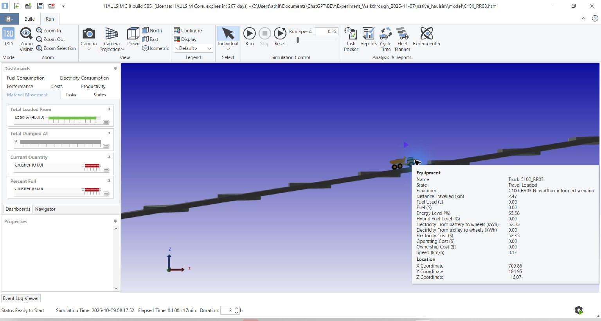
The bottom status reads “Ready to Start” because Stop was used to pause this view; elapsed simulation time was retained. Run resumes the animation. The 9 October date in the application is the project's simulation calendar date; these demonstration captures were made on 7 November 2026.
The demonstration reached two simulated hours and delivered 180 t to the crusher. The completion screen and native material-movement report are shown in step 6.
Three vehicle configurations were crossed with three assumed road resistances. The central cell below is the case used in this live walkthrough. The 16% steep grade is fixed in all nine cases.
| Battery configuration | RR 2% | RR 3% | RR 4% |
|---|---|---|---|
| C080 · 283.2 kWh80% of reference capacity | C080_RR02 | C080_RR03 | C080_RR04 |
| C100 · 354 kWhReference configuration | C100_RR02 | C100_RR03 This demonstration | C100_RR04 |
| C120 · 424.8 kWh120% of reference capacity | C120_RR02 | C120_RR03 | C120_RR04 |
Read each row across to compare road resistance. Rolling resistance is uniform across each network and is an assumed road-condition input. It is not a measured New Afton surface property.
Capacity is not the only difference between rows. Battery mass, truck tare and power settings change with the capacity configuration. These are comparisons of whole vehicle configurations; their differences cannot be attributed to capacity alone.
The recording uses a separate local C100_RR03 demonstration project. To follow the clicks, open a working copy of this case in a licensed HAULSIM 3.8 installation.
The public package links the archived C100_RR03 database. It does not include the active demonstration database or its machine-specific launcher. Preserve the archived file and use a separate working copy.
Watch the actual click-by-click road properties recording
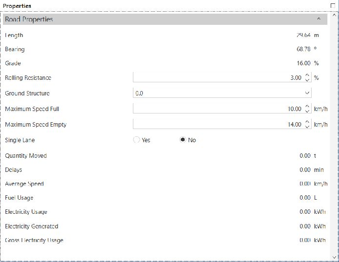
Use Isometric in the ribbon's View group and Zoom Visible to orient yourself, then rotate the scene with a right-button drag. Pan with a left-button drag and zoom with the mouse wheel. Ctrl + right-click centres a point in the view.
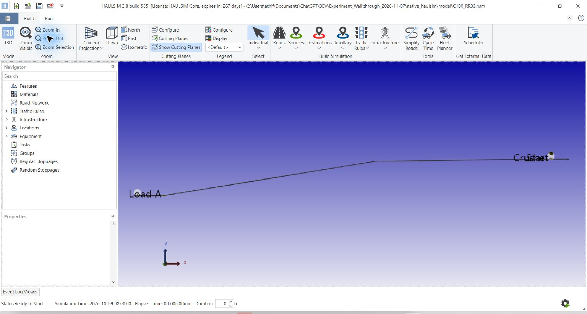
Grade and rolling resistance are different settings. Grade describes the road slope. Rolling resistance describes resistance at the tyre–road contact. This experiment changes resistance between cases while retaining the same route geometry.
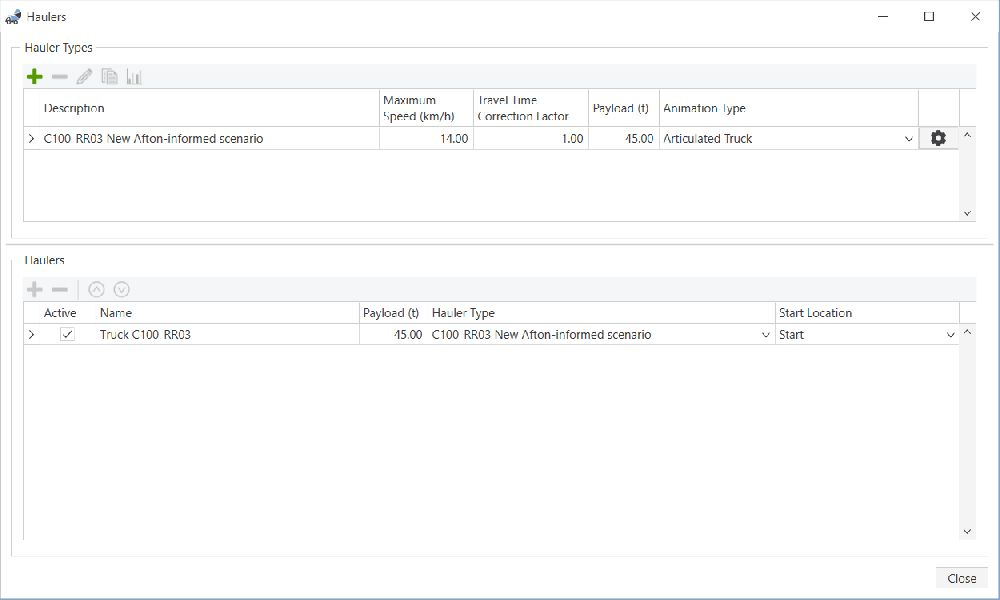
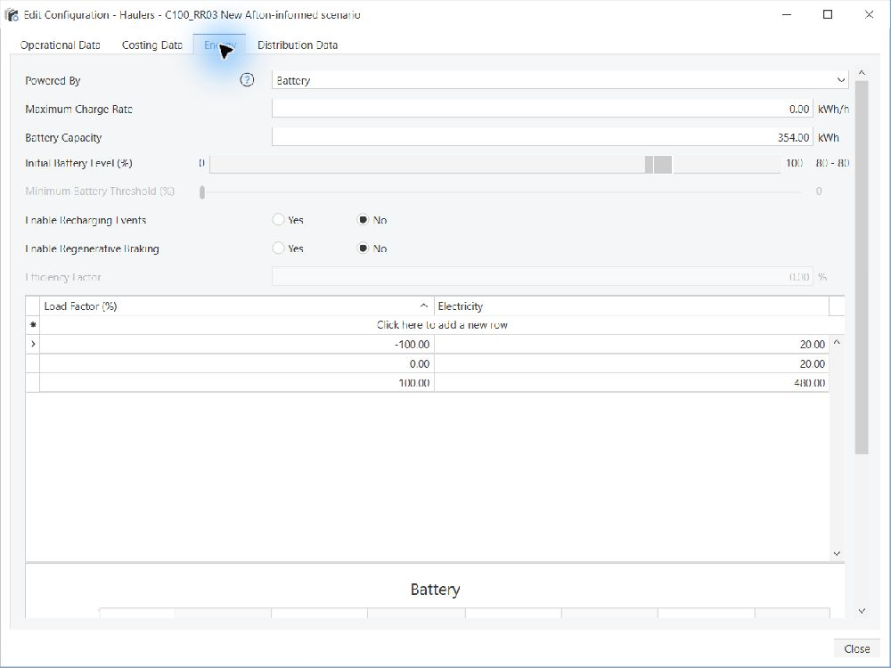
The underlying equipment-library tray has a 50 t rated capacity. This scenario's operating payload is 45 t, as displayed above. Completed material movements provide a second check after the run.
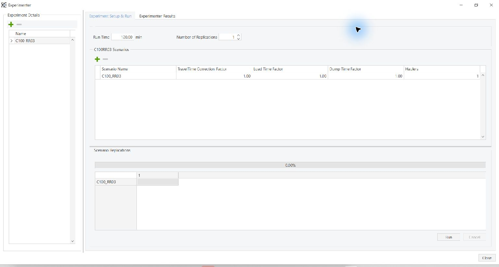
Check both places. Experimenter uses minutes. The interactive Run view uses its own duration field in hours. Confirm the animated run says 2 h before starting.
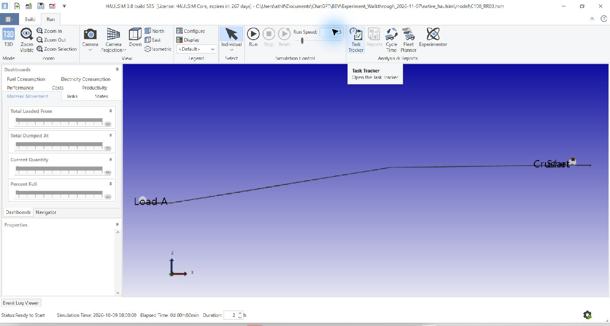
For this demonstration, the run was paused to inspect the truck, then resumed at Run Speed 5.00 to reach the two-hour horizon. The completion screenshot therefore shows 5.00 rather than the 0.25 used for the earlier animation views.
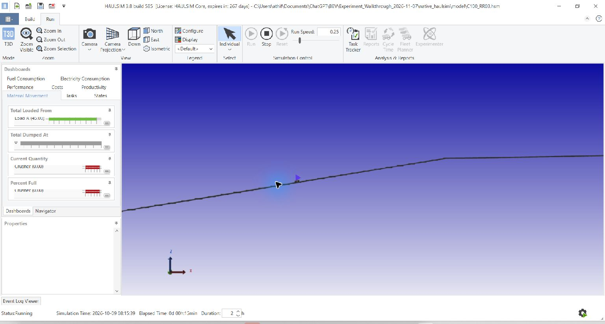
Hover over the truck to inspect the Equipment readout. This capture accompanies the close view at the top of the page and makes the loaded-travel state legible.
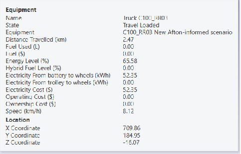
This fresh central-case demonstration reached 120 simulated minutes. The native dashboard showed 225 t loaded and 180 t dumped at the crusher. The Material Movement Summary independently displayed Load A → Crusher: 180.00 t.
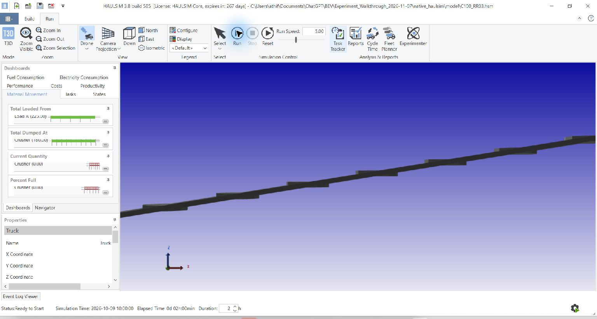
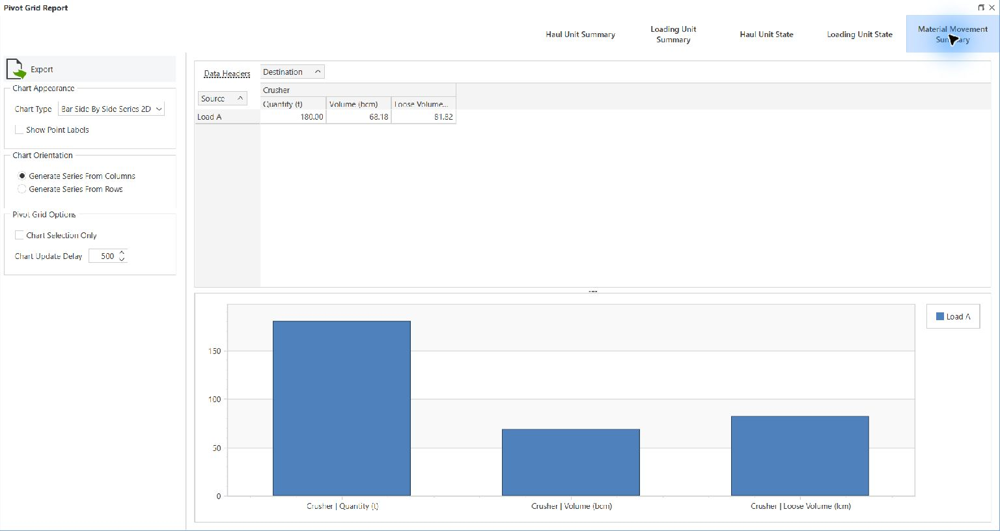
Comparison with the archive: the October C100_RR03 run also delivered 180 t over 120 minutes. The demonstration's Haul Unit Summary displayed 332.91 kWh; the archived native audit records 332.80346 kWh. This is an educational rerun, not a claim of exact numerical replication. The original research results remain in their separate archives.
The native battery indicator can pass through zero. Recharging is disabled and the configured threshold is 0%. Completion of the two-hour simulation does not mean that all its hauling is feasible within the chosen battery reserve.
The animation ends at a haulage result. The research continues using the saved event ledger. These downstream calculations are separate from the native run shown above.
Read each operating state, its duration, energy use and the time a delivery finishes.
Sum energy across all states and stop the feasible-work calculation at 20% remaining energy.
Convert event power to an assumed reference-cell current, then apply the fitted heat-balance model.
The external calculation includes stationary energy as well as travel energy. If the budget is crossed during an event, the crossing time is interpolated using that event's average power. A load counts only if unloading finishes before the cutoff.
Archived central-case example: the corrected energy ledger reaches the reserve at about 85.6 minutes. Three unloads have finished by then, giving 135 t before reserve. The fourth delivery belongs to the full-horizon total, but falls after the reserve cutoff. These are the archived analysis values, not newly calculated results for this demonstration.
Event energy divided by event duration gives average power. The later analysis maps power divided by nominal pack energy onto a 2.5 Ah reference cell, then uses an externally fitted heat-balance model to generate temperature. This equivalent current does not identify actual truck-pack or individual-cell current.
The resulting curve is an assumed laboratory-cell temperature response driven by simulated workload. HAULSIM does not calculate that cell temperature, and the animation does not demonstrate a measured battery temperature or thermal-runaway prediction.
For the full explanation of the archived reserve, thermal and forecasting stages, open the separate experiment explanation video or its transcript. Those materials explain archived results.
Control names were checked against the installed HAULSIM 3.8 help topics “Road network”, “Run”, “Experimenter” and “Operating your mouse and keyboard”. Screenshots are native application captures; click any image to inspect its original resolution.